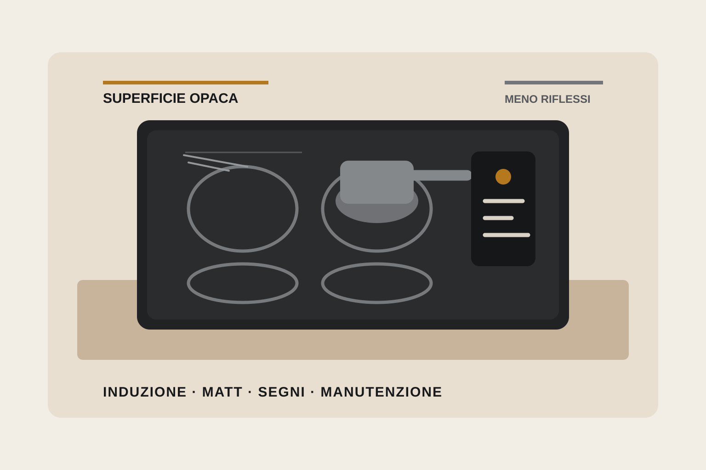

Piano a induzione opaco e antigraffio: cosa cambia davvero

Il nero opaco sta arrivando sui piani a induzione dopo anni in cui la vetroceramica lucida è stata quasi uno standard. A prima vista può sembrare soprattutto una scelta estetica, ma alcuni produttori stanno associando alla finitura matt anche trattamenti pensati per ridurre impronte, macchie e visibilità dei graffi. È qui che conviene leggere con attenzione le parole usate: opaco, antigraffio e graffio meno visibile non indicano necessariamente la stessa prestazione.
AEG, per esempio, dichiara per i piani SaphirMatt una resistenza ai graffi fino a dieci volte superiore rispetto alle proprie superfici in vetroceramica standard. La nota tecnica precisa che il dato deriva da prove di abrasione effettuate da un laboratorio esterno secondo IEC 60068-2-70 e che la visibilità dei graffi viene confrontata con vetroceramica standard senza trattamenti o rivestimenti speciali. Siemens, sulla propria Matt Edition, formula invece il vantaggio in modo differente: parla di graffi fino a cinque volte meno visibili rispetto alla vetroceramica standard, sulla base di un confronto di laboratorio interno e di una valutazione soggettiva.
Una superficie che rende un segno meno evidente non è automaticamente una superficie che si graffia meno. Prima di confrontare due piani bisogna capire se il produttore sta dichiarando maggiore resistenza all'abrasione, minore visibilità del graffio oppure entrambe le cose.
L'opaco cambia anche la percezione della cucina
Una superficie matt riflette meno la luce rispetto al classico vetro nero lucido. In un open space molto luminoso questo può ridurre riflessi e contrasti sul piano cottura e creare una continuità più naturale con top in pietra, compositi, laminati opachi o ante supermatt. Non significa però che il piano “sparisca”: texture, tonalità del nero, bordo, comandi e installazione a filo o sopratop continuano a incidere molto sul risultato.
Per questo il campione reale rimane più utile di una fotografia. Due neri opachi accostati possono avere temperature cromatiche e gradi di riflessione diversi; lo stesso vale per l'abbinamento con top scuri. Una soluzione volutamente tono su tono può risultare molto uniforme oppure evidenziare proprio la differenza fra le superfici quando la luce arriva lateralmente.
La manutenzione non scompare
La minore evidenza delle impronte è un vantaggio pratico, soprattutto su una superficie nera che viene toccata continuamente. Non va però tradotto nell'idea di un piano che non richiede attenzioni. Le indicazioni di pulizia cambiano anche in funzione del trattamento superficiale: AEG, per esempio, pubblica istruzioni specifiche per SaphirMatt e raccomanda prodotti e spugne compatibili con quella finitura.
Questo è un aspetto da considerare prima dell'acquisto, non dopo. Se una superficie speciale richiede modalità di pulizia diverse da quelle a cui si è abituati, vale la pena verificarle insieme alla disponibilità dei prodotti consigliati e alle indicazioni del produttore. Anche una finitura più resistente resta un componente da usare correttamente: trascinare pentole con fondi sporchi o granelli abrasivi rimane una condizione sfavorevole.
Se c'è la cappa integrata, il tema non è più soltanto la superficie
Le finiture opache sono disponibili anche su piani con aspirazione integrata. In quel caso l'estetica è solo una parte della decisione. Sotto il top devono trovare posto motore, canalizzazioni o sistema filtrante; cambiano lo spazio disponibile nei cassetti, la profondità utile del mobile e, a seconda della configurazione, il percorso dell'aria.
Prima di scegliere un modello con cappa integrata servono quindi le stesse verifiche che Sistema 90G considera per qualsiasi piano aspirante: larghezza del modulo, spessore e lavorazione del top, quote di incasso, ventilazione richiesta, possibilità di espulsione o ricircolo, accessibilità dei filtri e interferenze con basi, zoccolo e impianti. Una superficie più gradevole da vedere ogni giorno non compensa un inserimento tecnico poco risolto.
Il confronto corretto va fatto sul modello, non sulla parola “matt”
Il mercato sta usando la finitura opaca su gamme con caratteristiche molto diverse. All'interno della stessa famiglia possono cambiare larghezza, numero e flessibilità delle zone, sensori di cottura, possibilità di installazione a filo, collegamento con la cappa e potenza elettrica richiesta. Il trattamento del vetro è quindi una voce del confronto, non il criterio unico.
Per una cucina nuova la sequenza più sensata è partire dall'uso e dallo spazio: dimensione delle pentole, numero di fuochi utilizzati contemporaneamente, posizione del piano, rapporto con cassetti e forno, presenza della cappa e potenza disponibile. Solo dopo ha senso decidere quanto pesano estetica, impronte e resistenza ai segni.
Le superfici opache evolute sono interessanti proprio perché affrontano un limite reale dei piani neri tradizionali: la facilità con cui luce, ditate e microsegni diventano visibili. Il vantaggio, però, va letto nella formulazione esatta con cui è stato misurato e nel contesto del modello scelto. È una differenza piccola nelle parole, ma sostanziale quando si confrontano prodotti e aspettative.
Fonti verificate
AEG Italia — SaphirMatt e metodologia dichiarata: https://www.aeg.it/discover/saphir-matt-induction-hobs/
AEG Italia — esempio di modello e specifiche di installazione: https://www.aeg.it/kitchen/cooking/hobs/induction-hob/ti84ib30iz/
AEG Support — indicazioni di pulizia SaphirMatt: https://support.aeg.it/support-articles/article/piano-cottura-saphirmatt-con-superficie-antigraffio-istruzioni-per-la-sua-pulizia
Siemens Italia — Matt Edition e nota sul confronto della visibilità dei graffi: https://www.siemens-home.bsh-group.com/it/prodotti/cottura-e-cottura-al-forno/piani-cottura/piano-cottura-opaco-cappa-integrata-matt-edition